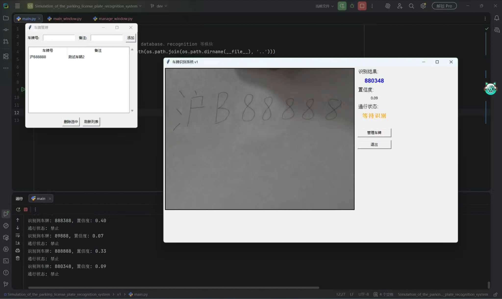

尝试对小区车牌识别系统的模拟
时间经过: 2026.2.1-2026.2.15
一、引言
寒假的一天，我正要出门，却在楼下的三轮车上看见了一个假的车牌。这个车牌是用来应付小区门口的门禁的

在我们小区门口，有一个摄像头和横杆。当一辆车开到小区门口时，摄像头识别到车牌号，横杆就会升起，过一段时间再落下
我突然觉得，这个东西好像并不是很难，是不是我也可以做一个啊
我问了一下deepseek，好像确实不是很难，各个部分都不是做不出来
于是我就兴奋了起来，并决定尝试一下做一个对小区车牌识别系统的模拟
整个系统大概包括数字识别、后端数据库、前端操作界面、硬件的闸门控制等几个部分
Github仓库在这里
二、主要过程与内容
0）AI
在一开始，我突然有了这样的一个念头：在这个项目中，我想完全不使用AI，而是传统地去搜索引擎寻找陌生的知识
但是还没等我正式动手，我就意识到，这太难了。
或许是因为传统的方法本来就很难，又或者是因为我现在对AI的依赖太严重了。总之我发现离了AI就好像放下拐杖一样，一种恐惧会突然出现在我脑子里
我对AI的认识，主要还是在ChatGPT问世之后。而到如今才不过三四年。
我直接使用AI，则主要是在通义千问和deepseek出现之后，这也才不过一两年。
我没想到，这么短的时间里我就开始害怕失去AI了
其实在这个项目中，各个部分似乎都不是现在的我能手写的，因为每一个部分难度都不小。我现在真正能做的，或许就是从AI那里ctrl c和ctrl v一堆代码
但我想，这也是有意义的吧。毕竟我一直在用LLM的网页端，而非agent，所以真正动手的都是我自己。并且一开始的想法、过程中的思考，基本上也都来自我自己。而且把这一切组装起来也算是一个非凡的经历
我相信，AI还只是个辅助的工具
只是AI给了我这样的小白，一次动手试试的机会
（此外，当我正式动手时，我发现AI的话也不能全信。所以说在使用AI之前，一定的前置知识依然是必须的
（还有，deepseek现在好厉害。全程我只用了一个对话，我也没感觉有什么很明显的记忆问题。它的上下文记忆能力这么强吗
0.5）动手前
我在新建Github库的README.md的时候，想起来了一件事情：Windows和Linux的换行符不一样
我问了一下AI，于是决定在项目根目录新建一个.gitattributes文件，写上
点击查看我的.gitattributes
1 | # 设置文件的行尾为 LF |
再设置git config core.autocrlf false
这样就能把本地和远程github库的换行符都换成LF了
另外AI给了我一个自动配置.gitignore的网站，是https://www.toptal.com/developers/gitignore
我输入了Python OpenCV VisualStudioCode，并把搜索的结果复制粘贴到了.gitignore文件
正式动手时，AI建议我按照Python的Module那样组织项目文件。就是每个模块有个__init__.py那种
现在有AI真好啊，可以一下子就帮我取好了很多名字哈哈。比如说我新建了文件夹recognition database ui hardware
另外AI每次回答中，都会帮我在网上查到很多相当成熟的案例，所以给我的建议都相当的细致。这真是帮了我大忙了。
而且由此看来，这个项目早就有相当成熟的案例了，我决非“第一个”。关于这一点，我会在第三部分“结论与讨论”的第3点“常见性”有所讨论的
1）数字识别
一开始我给标题起的就是数字识别。但后来我意识到，车牌不止有数字，还有英文字母、汉字、点号·，所以“数字识别”其实是不准确的（
在AI建议下，我选择的工作流是这样的：
用PaddleOCR进行车牌检测和字符识别，用OpenCV进行图像处理
微调YOLO
一开始，我选择用YOLO检测车牌、裁剪后把车牌小图给PaddleOCR进行检测。
我尝试在网上搜索训练好的模型权重，但要么未上传.pt文件、要么需要付费下载。这样的话，我就想着微调一下YOLO，让它认识车牌。
我从AI那里知道了CCPD这个数据集。但是，怎么下载呢？官方github库只给出了点不开的谷歌云盘链接和巨慢无比的百度网盘链接。issue里有好人分享百度AI Studio的链接但是我没弄明白。我搜到了魔搭的页面并尝试CLI下载数据集但是被Python警告说依赖缺失。Hugging Face找到了CCPD但是也没弄明白。最终我在OpenXLab终于成功用CLI下载了CCPD数据集。这个下载用了好长时间，感觉有半个小时。
下载好后，我发现，想要CCPD数据集的.jpg还需要我自己来解压.tar.7z文件。于是我来到7zip官网下载安装，并打开powershell执行7z x CCPD2019.tar.xz -so | 7z x -si -ttar -oCCPD2019。经过一个晚上的解压，发现解压失败了。大概这种大数据集真的不是普通电脑能玩的吧
不过也不算是白玩。我看过了AI给的代码，知道了微调模型的流程，还新建了很多文件夹，就差最后一步了而已。
尝试PaddleOCR
放弃微调YOLO后，我选择使用PaddleOCR的检测模型和识别模型
在pip后测试是否安装成功的时候，发现报错了。原来是我的conda环境用了Python3.13，这对于PaddleOCR来说太新了。那没办法，换一个conda环境再用Python3.10呗。一劳永逸。吃一堑长一智。
换了新的conda环境后再pip，测试时又报错了。好像是什么依赖有问题
算了，再换一个
选择EasyOCR
再试试使用EasyOCR的检测模型和识别模型
AI说EasyOCR的检测模型没有那么准，不能直接检测车牌。而我又不想微调了，因为那要么需要下载庞大的数据集，要么需要自己手动画锚框。
最后我打算使用EasyOCR的检测模型获得图片中的文字部分，再由EasyOCR的识别模型识别出具体文字是什么，最后再用正则表达式进行过滤
但是这个使用EasyOCR和OpenCV的“检测-裁剪-识别-过滤”的流程，被AI指出实时性不高。那也只能先这样了
从AI那里复制粘贴代码后，尝试运行，发现第一次运行EasyOCR会自动下载模型。好慢啊我天。
下载大半个小时后……
好消息，模型下载成功了
坏消息，未识别到车牌
原来是正则表达式太严格了，而EasyOCR检测的车牌号的第一个汉字（省级行政区简称）错了，所以没有通过正则表达式
跟AI一起改了很多次代码，包括OpenCV预处理和更改EasyOCR参数
简单的测试了一下，发现有以下问题：
- 无法准确识别汉字
- 置信度极低（如
0.04） - 把
A识别成4了
但正着的和斜着的倒是都能识别
就先这样吧。大数据集也没有，我也不想手工标，Python还有依赖问题，我还能有啥高要求呢
2）后端数据库
AI建议，使用SQLite
我跟AI说，要求后端数据库可以检查传入的车牌号是否在已有的数据库中，有则返回“通过”，没有则返回“不通过”
AI自己还加上了手动添加/删除允许通过的车牌、列出已有的车牌的功能
AI真厉害
3）前端操作界面
AI建议，使用Tkinter
我直接就要求AI组织UI文件架构并给出UI代码
从这里开始，我基本就完全看不懂代码了。只能是直接对AI的代码执行cv大法（指复制粘贴）
我靠，AI写的UI太漂亮了，风格简直和我在考科二的时候看见的UI一模一样（
我发现AI给出的main.py部分代码非常简洁，而主要的识别、数据库检查、界面更新逻辑都封装进了UI部分的代码。原来前端这么忙吗，这我真的才知道（
4）硬件的闸门控制
哈，这里其实什么也没有
因为输入由UI部分对笔记本电脑摄像头的调用实现，输出则直接print并显示在UI界面
那硬件呢？一会再说，这里先按下不表
5）Git与Github与版本
在上述过程中，我一直在尝试使用Git把代码上传到Github的仓库。
具体来说，我在dev分支进行开发，再合并到main分支。每做好几个模块，我就push一次Git真的是一个特别好的功能
我看的Git教程在这里https://liaoxuefeng.com/books/git/introduction/index.html
我的Github库好像没有选择license。选哪个好呢？
此外或许你会发现，前面的东西都是在我笔记本电脑上做的，而非真实应用中的环境。我会把这称作版本v1
后面我会尝试考虑，如果这个项目真的落地了，应该在什么样的环境中工作。我会把这称作版本v2
6）考虑工程的迁移
先前的过程中，我基本都是在自己的笔记本电脑上做一些东西
而经过与AI激烈的讨论，我已经大体知道了该如何迁移到真实的工作环境了
A）数字识别在摄像头
技术栈：树莓派 YOLO EasyOCR OpenCV
工作流：树莓派摄像头用YOLO对车牌进行检测，并裁剪小图给门卫处Windows，再由Windows的EasyOCR进行字符识别，并执行判断逻辑。图像处理由OpenCV完成
B）后端数据库在电脑主机
技术栈：SQLite
工作流：收到识别结果后，查看数据库中是否已有识别到的车牌号。如果有则放行，没有则保持横杆不动。同时实现手动增加/删除数据库中的车牌号与备注、列出已有的车牌等功能
C）前端操作界面在电脑浏览器
技术栈：Flask HTML CSS JavaScript
工作流：启动程序后，打开浏览器并在地址栏输入localhost:【端口号】，便可见由HTML, CSS, JavaScript搭建的前端页面，且具备手动增加/删除/查看等功能
D）硬件的闸门控制在特定硬件系统
技术栈：STM32
工作流：接收传来的放行信号后，升起横杆，并在红外装置识别到车辆已通过后，放下横杆
三、结论与讨论
0）个人总结
A）v1部分
在第一个部分（车牌识别），我真的没想到会这么复杂。算是我简单地亲身体会了一下，深度学习在真实场景中的应用
过了第一个部分，我也没想到会这么简单。后端数据库、前端UI页面，几乎就是直接把AI的代码复制粘贴过来。而硬件也不必考虑，直接print结果就可以模拟了。
虽然代码是从AI那里复制粘贴的，但是准备运行main.py的时候，还是难免心跳加速
果不其然，第一次的时候报错了，说是ImportError: attempted relative import beyond top-level package
第二次的时候就基本成功了。只是识别的一点都不准哈哈，还有Tkinter的界面并没有显示摄像头拍摄的实时画面
第三次的时候，画面也有了，唯一的缺点就是识别的一点都不准了
v1完工的时候，这个系统只能识别数字，很难识别字母，几乎完全不能识别汉字。倾斜一些似乎问题不大，暗一些似乎也问题不大。
但是v1还有一个问题：它是一直在识别的。如果一辆车被识别成功，横杆升起，在车辆过杆的过程中，可能会突然识别失败，导致横杆落下。那显然是很危险的。所以v2的时候还会更新一个逻辑：如果识别成功，那么横杆就升起一段时间，同时暂停识别，等到横杆落下再启动识别程序

{kind=link}
B）v2部分
要是后面的车着急怎么办？要是横杆在行车过杆的过程中落下怎么办？
所以需要数字识别快一些/横杆不可提前落下
- 数字识别要想快一些，可以选择更好的识别模型
- 想要控制横杆不提前落下，则可在横杆处增加红外检测装置，检测车辆是否已经通过
在与AI激烈讨论后，我便有了大体思路。但其实这部分的代码我是看不太懂的，在自己电脑上也不太能够测试。那我自己能做的，就只有思考与复制粘贴。所以这部分进行的还蛮快的（
树莓派和STM32我目前是真的不懂。所以树莓派我只是复制粘贴了相关代码，STM32甚至文件我都没给全。
不过好像挺有意思的，或许以后我会学一学吧
此外我发现一个完整的项目真的太难了，全栈独立完成几乎是不可能的
在git push origin main后，我在git bash敲下exit，真的是长呼一口气
完成了
尝试过、努力过，结束了。
1）合法性
需要注意的是，车牌的识别应确保合理合法。例如训练数据不应来自非法获取
2）未来方向
其实最好的情况下，这个系统应该能够分辨真假车牌号。毕竟我家门口的这个好像就分辨不出来（
另外我在想，如果不是对车牌的识别，而是人脸识别呢？或许只需要把数字识别换成人脸识别、把车牌号的后台数据换成人们的姓名，就可以了吧。不过这样的话，数据的收集同样需要考虑隐私问题
在项目开发过程中，我没有使用之前在教程中见到的TTD（测试驱动开发）（Test-Driven Development）。或许以后可以考虑一下。
3）常见性
这个项目，只是起源于我的突发奇想。在一开始，我并没有考虑那么多，而仅仅是为自己新奇的想法感到兴奋与激动，就打算动手了
后来在舍友的提醒下，我意识到：这个东西在景区停车场、小区门口等等地方都有着广泛应用
再后来，经过在网络上的搜索，我又意识到：其实类似的项目早已层出不穷地出现在互联网上，并且很多方案都已经极其成熟，甚至已经在一些真实的生产环境中落地，例如这篇CSDN的博客，以及这篇百度开发者中心的文章，甚至还有arxiv的论文
4）意义
如上所说，这其实是一个早已经过前人研究的、比较成熟的项目。所以在网络上检索到那些成熟的方案时，我不免会质疑自己做的这个东西意义何在
或许，别人的终究是别人的，自己的才是自己的。我才刚刚入门这个领域，幻想做出一个别人没做过的项目才是天方夜谭。所以当作“家庭作业”一般对待，也许才是我对它应该有的态度
不管怎么说，这么一堆东西下来，我确实是：
- 理解了如何组织Python的项目文件
- 知道了使用Git的大体流程
- 能几乎独立看懂AI写的预处理CCPD数据集、微调YOLO的代码
- 大概知道了怎么处理数据集、怎么微调一个预训练模型
- 大概了解了前后端是如何协作的
- 在正式动手前，能够比较发散地思考问题
- 初步能做到以项目实际落地的角度细致考虑问题
- 意识到一个完整项目的复杂性
总之是收获颇丰啊
四、致谢
感谢我自己，感谢自己对生活的细致观察和强烈的好奇心。
感谢大学舍友和高中同学对我的支持。
感谢deepseek和互联网。不然的话，如果只有我自己是做不出来这个东西的。